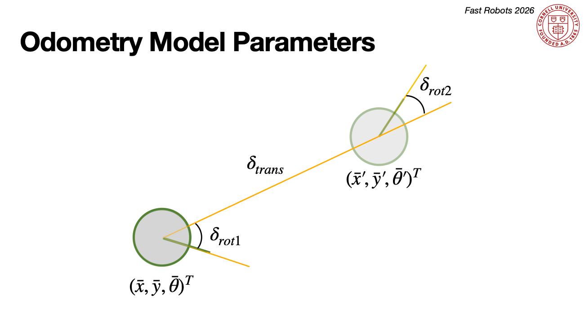
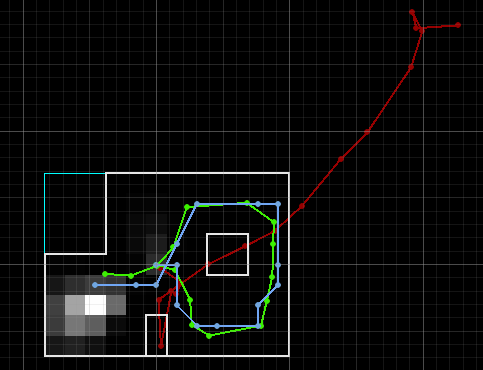

- Implement Grid Localization using Bayes Filter in simulation.
Objective
Lab 10 Sections
- Introduction
- Compute Control
- Odometry Motion Model
- Prediction Step
- Sensor Model
- Update Step
- Simulation
Introduction
For this lab, we were given a simulation jupyter notebook and we had to implement the Bayes Filter in order for the simulated car to perform grid localization.
Prelab:The prelab section was completed during a class session, where we set our computer environments up to run the simulation without the Bayes Filter.
Then, I made two simple versions of Open and Closed Loop control. First the car was going in "squares" (instead of circles), and then the car was moving towards a wall up until a distance, and then changed it's course to avoid it.
The simulation's world was discritized in a 12 by 9 by 18 grid (x,y,θ). Each x and y cell were 0.3048 meters and each θ was 20 degrees.
Then, I made two simple versions of Open and Closed Loop control. First the car was going in "squares" (instead of circles), and then the car was moving towards a wall up until a distance, and then changed it's course to avoid it.
The Bayes Filter will essentially give probability of "existence" in every one of these cells per step. It has a prediction step to incorporate the control input, and an update step, where the sensor inputs are incorporate to better the belief.
The Algorithm was made via the following functions.
Compute Control
compute_control() takes in the current pose and previous pose of the car and returns three things: initial rotation, translation and final rotation.
These are the 3 steps the car needs to go to its target location.
This can be seen here:

defcompute_control(cur_pose, prev_pose) : delta_x = cur_pose[0] - prev_pose[0] delta_y = cur_pose[1] - prev_pose[1] theta = cur_pose[2] prev_theta = prev_pose[2] delta_theta = np.degrees(math.atan2(delta_y, delta_x)) - prev_theta delta_rot_1 = mapper.normalize_angle(delta_theta) delta_trans = math.sqrt(delta_y**2 + delta_x**2) delta_rot_2 = mapper.normalize_angle(theta-prev_theta-delta_rot_1) returndelta_rot_1, delta_trans, delta_rot_2
Odometry Motion Model
odom_motion_model() takes in the current and previous pose of the car, as well as its control inputs and returns the probability of where the robot is after these noisy inputs.
It calculates the probability density for the rotations and translation mentioned above, using both the actual and predicted controls (via compute_control()).
defodom_motion_model(cur_pose, prev_pose, u) : delta_rot_1, delta_trans, delta_rot_2 = compute_control(cur_pose, prev_pose) prob_rot_1 = loc.gaussian(delta_rot_1, u[0], loc.odom_rot_sigma) prob_trans = loc.gaussian(delta_trans, u[1], loc.odom_trans_sigma) prob_rot_2 = loc.gaussian(delta_rot_2, u[2], loc.odom_rot_sigma) prob = prob_rot_1*prob_trans*prob_rot_2 returnprob
Prediction Step
prediction_step()... predicts the robot's belief of location using the odometry motion model, as the controls themselves are noisy and not super trustworthy.
It takes in the current and previous odometry readings as inputs and, using the control parameters, goes through all possible previous and current poses within our (x,y,θ) discritized world.
It uses odom_motion_model() to calculate the probability of going to a current pose from a previous one, for each possible transition and poses.
One thing to note is that when the probability of a previous state is less than 0.0001, the function skips it and doesn't calculate probabilities for transitions from there. The accuracy lost is minimal due to the probability of being there being so low, but the upside (quicker execution) is significant.
defprediction_step(cur_odom, prev_odom) : u = compute_control(cur_odom, prev_odom) for x in range(mapper.MAX_CELLS_X): for y in range(mapper.MAX_CELLS_Y): for a in range(mapper.MAX_CELLS_A): if(loc.bel[x,y,a]) >= 0.0001: for x_2 in range(mapper.MAX_CELLS_X): for y_2 in range(mapper.MAX_CELLS_Y): for a_2 in range(mapper.MAX_CELLS_A): prev_pose = mapper.from_map(x,y,a) curr_pose = mapper.from_map(x_2,y_2,a_2) prob = odom_motion_model(curr_pose, prev_pose, u) loc.bel_bar[x_2,y_2,a_2] += prob*loc.bel[x,y,a] loc.bel_bar /= np.sum(loc.bel_bar)
Sensor Model
sensor_model() takes in observations and returns a probability array for the different noisy sensor measurements.
defsensor_model(obs) : prob_array = np.zeros(mapper.OBS_PER_CELL) for i in range(mapper.OBS_PER_CELL): prob_array[i] = loc.gaussian(obs[i], loc.obs_range_data[i], loc.sensor_sigma)[0] returnprob_array
Update Step
update_step() is responsible for obtaining a sensor measurement probability array, and based on that to update the current belief that it is in each cell of our world.
It achieves this by using the sensor_model() and the predicted belief (belief bar).
defupdate_step() : for x in range(mapper.MAX_CELLS_X): for y in range(mapper.MAX_CELLS_Y): for a in range(mapper.MAX_CELLS_A): prob = np.prod(sensor_model(mapper.get_views(x,y,a))) loc.bel[x,y,a] = loc.bel_bar[x,y,a]*prob loc.bel = loc.bel/np.sum(loc.bel)
Simulation
In this section, we can see the simulated robot following a predefined trajectory, and localizing with the implemented Bayes Filter.
RED: Odometry Model based belief of where the robot is
BLUE: Probabilistic (Bayesian) Belief of where the robot is
GREEN: Ground Truth of where robot is
SQUARES: Distribution of Belief of where the robot is
Below we can see a full video of the entire simulation running:
BLUE: Probabilistic (Bayesian) Belief of where the robot is
GREEN: Ground Truth of where robot is
SQUARES: Distribution of Belief of where the robot is

Discussion
Lab 10 successfully implemented Bayes Filter on the simulation we were given to achieve Grid Localization.